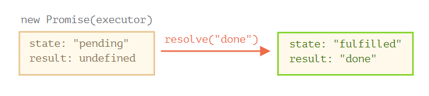

【ES6前端框架】ES6基础
1.变量定义
ES6新增了 let 和 const，分别用来声明变量和常量，应该尽可能使用 let 和 const 来定义变量，而不是 var
1.1 let 关键字
let 用于声明变量，声明的变量只在当前代码块能被访问到
|
|
1.2 const 关键字
const 声明一个只读的常量
一旦声明，常量的值就不能改变，这意味着，const一旦声明变量，就必须立即初始化，不能留到以后赋值
|
|
2. 模板字符串
模板字符串（template string）是增强版的字符串，用反引号（`）标识。它可以当作普通字符串使用，也可以用来定义多行字符串，即换行和缩进将会被保留，或者在字符串中嵌入变量。
|
|
3. 数组常用方法
这里列举数组的常用方法，并不都是ES6新增的方法
3.1 forEach
遍历数组，没有返回值，不改变原数组，处理函数可以接收三个参数，分别是当前位置元素item，当前位置下标index，当前遍历的数组
|
|
3.2 map
遍历数组，不在源数组上进行操作，返回一个新的数组，处理函数可以接收三个参数，分别是当前位置元素item，当前位置下标index，当前遍历的数组
|
|
forEach 和 map 的区别
map方法：
map它返回一个新数组，原数组的结构不会被改变。 如果需要对原数组进行操作并返回一个新的数组，map是更合适的选择。 map经常用于转换数组中的每个元素。
forEach方法：
forEach直接在原数组上进行操作，不返回任何值（或者说返回undefined）。 它没有能力中断循环，也就是说，即使出现错误，forEach中的函数也会继续执行。 如果需要在数组上直接进行修改，并不需要一个新数组，那么可以使用forEach。
3.3 filter
不在源数组上进行操作，返回一个新的数组，处理函数可以接收三个参数，分别是当前位置元素item，当前位置下标index，当前遍历的数组
|
|
3.4 includes
返回一个布尔值，表示某个数组是否包含给定的值，该方法的第二个参数表示搜索的起始位置
|
|
3.5 find()
find()方法在JavaScript中用于在数组中查找满足特定条件的第一个元素。它接受一个回调函数作为参数，该函数返回布尔值来确定元素是否匹配。如果找到匹配项，则返回该元素，否则返回undefined。此方法不会改变原始数组，适用于寻找单个匹配项。
|
|
参数解释：
callback：必需。要在数组中每个元素上执行的函数。element：必需。当前正在处理的数组元素。index：可选。正在处理的元素的索引。array：可选。调用该方法的数组本身。thisArg：可选。当执行回调函数时使用的this值。
find() 方法的第一个参数 callback 是一个函数，用于测试每个元素是否符合条件，接收三个
参数：
element：表示当前正在被处理的元素。 index：表示正在被处理的元素的索引。 array：表示当前正在被处理的数组对象。 回调函数应该返回一个布尔值，表示当前元素是否符合我们的条件。如果返回 true，则会停止遍历并返回该元素的值；否则，继续遍历直到遇到符合条件的元素或者整个数组都被遍历完毕。
find() 方法实际应用：
**实例 1：**查找数组中的第一个负数。
|
|
**实例 2：**从对象数组中查找符合条件的对象。
|
|
**实例 3：**使用 thisArg 参数指定回调函数中的 this 值。
|
|
★注意事项
- find() 方法会遍历整个数组，直到找到满足条件的元素或者遍历完整个数组。
- 如果数组为空，那么返回 undefined。
- 在回调函数中修改数组本身不是一个好习惯。如果要修改数组，请使用 map() 或者 filter() 方法。
- 当多个元素符合条件时，find() 方法只会返回第一个符合条件的元素。
- find() 方法是 ES6 中新增的方法，在较旧的浏览器中可能不被支持。
3.6 findIndex()
findIndex返回满足条件的第一个元素的索引，而find返回满足条件的元素本身。这两个方法都不会改变原数组，且在找到匹配项后停止遍历剩余元素。
findIndex方法常用来查找数组中满足条件的第一项元素的下标
|
|
返回的index是满足条件的第一项元素的下标，这要注意的是findIndex会给数组中的每一项执行一个函数来判断是否满足表达式，如果满足条件后，剩下的元素则不再执行
3.7 indexOf()
indexOf方法可返回某个指定的字符串值在字符串中首次出现的位置。
如果没有找到匹配的字符串则返回 -1
注意： indexOf() 方法区分大小写。
|
|
**注意：**indexOf 会做简单的类型转换
|
|
**注意：**number 类型有没有 indexOf 方法
|
|
对 number 类型使用 indexOf 方法，需要先转换成字符串
|
|
**注意：**Array 类型 indexOf() 方法在数组中搜索指定项目，并返回其位置。
搜索将从指定位置开始，如果未指定开始位置，则从头开始，并在数组末尾结束搜索。
如果未找到该项目，则 indexOf() 返回 -1。
如果该项目出现多次，则 indexOf() 方法返回第一次出现的位置。
注释：第一项的位置为 0，第二项的位置为 1，依此类推。
提示：如果您想从尾到头搜索，请使用 lastIndexOf() 方法。
|
|
参数值
| 参数 | 描述 |
|---|---|
| item | 必需。要搜索的项目。 |
| start | 可选。从哪里开始搜索。负值给定的位置将从结尾计数，然后搜索到最后。 |
示例
|
|
find 与 findIndex
find返回元素，findIndex返回索引 找不到时find返回undefined，findlIndex返回-1
findIndex 与 indexOf
findlndex比indexOf更强大一些，可以查找 对象数组， indexOf只能查找 数组 中指定时值，不过indexOf可以指定开始查找位置的索引
4. 对象常用方法
4.1 Object.assign()
用于对象的合并，将源对象（source）的所有可枚举属性，复制到目标对象（target），第一层属性是深拷贝，第二层属性是浅拷贝
|
|
5. 解构赋值
解构赋值 是一种特殊的语法，它使我们可以将数组或对象“拆包”为到一系列变量中，因为有时候使用变量更加方便
解构操作对那些具有很多参数和默认值等的函数也很奏效
|
|
5.1 数组解构赋值
-
基础
1 2 3 4 5 6 7 8 9 10 11 12 13 14 15 16 17 18 19 20 21 22 23 24 25 26 27 28 29 30 31 32// 我们有一个存放了名字和姓氏的数组 let arr = ["Ilya", "Kantor"] // 解构赋值 // sets firstName = arr[0] // and surname = arr[1] let [firstName, surname] = arr; console.log(firstName); // Ilya console.log(surname); // Kantor /*-----------------分隔线-----------------*/ // 不需要第二个元素 let [firstName, , title] = ["Julius", "Caesar", "Consul", "of the Roman Republic"]; console.log( title ); // Consul /*-----------------分隔线-----------------*/ // 等号右侧可以是任何可迭代对象 let [a, b, c] = "abc"; // ["a", "b", "c"] let [one, two, three] = new Set([1, 2, 3]); /*-----------------分隔线-----------------*/ // 赋值给等号左侧的任何内容 let user = {}; [user.name, user.surname] = "Ilya Kantor".split(' '); console.log(user.name); // Ilya我们可以将
Object.entries()方法与解构语法一同使用，来遍历一个对象的”键—值“对：1 2 3 4 5 6 7 8 9let user = { name: "John", age: 30 }; // 循环遍历键—值对 for (let [key, value] of Object.entries(user)) { console.log(`${key}: ${value}`); // name:John, then age:30 }……对于 map 对象也类似：
1 2 3 4 5 6 7let user = new Map(); user.set("name", "John"); user.set("age", "30"); for (let [key, value] of user) { console.log(`${key}: ${value}`); // name:John, then age:30 } -
默认值
1 2 3 4 5// 默认值 let [name = "Guest", surname = "Anonymous"] = ["Julius"]; console.log(name); // Julius（来自数组的值） console.log(surname); // Anonymous（默认值被使用了） -
剩余的
...1 2 3 4 5 6 7 8 9let [name1, name2, ...rest] = ["Julius", "Caesar", "Consul", "of the Roman Republic"]; console.log(name1); // Julius console.log(name2); // Caesar // 请注意，`rest` 的类型是数组 console.log(rest[0]); // Consul console.log(rest[1]); // of the Roman Republic console.log(rest.length); // 2
5.1.1关于（…）运算符
5.2 对象解构赋值
-
基础
1 2 3 4 5 6 7 8 9 10 11 12 13 14 15 16 17 18 19 20 21 22 23 24 25 26 27 28 29 30 31 32 33 34 35 36 37 38let options = { title: "Menu", width: 100, height: 200 }; let {title, width, height} = options; console.log(title); // Menu console.log(width); // 100 console.log(height); // 200 /*-----------------分隔线-----------------*/ // 仅提取 title 作为变量 let { title } = options; console.log(title); // Menu /*-----------------分隔线-----------------*/ // 在options变量的基础上，改变 let {...} 中元素的顺序 let {height, width, title} = { title: "Menu", height: 200, width: 100 } console.log(title); // Menu console.log(width); // 100 console.log(height); // 200 /*-----------------分隔线-----------------*/ // 在options变量的基础上，改变映射关系，冒号表示“什么值：赋值给谁” let {width: w, height: h, title} = options; // width -> w // height -> h // title -> title console.log(title); // Menu console.log(w); // 100 console.log(h); // 200 -
默认值
1 2 3 4 5 6 7 8 9 10 11 12 13 14 15 16 17 18let options = { title: "Menu" }; let {width = 100, height = 200, title} = options; console.log(title); // Menu console.log(width); // 100 console.log(height); // 200 /*-----------------分隔线-----------------*/ // 改变映射关系并设置默认值 let {width: w = 100, height: h = 200, title} = options; console.log(title); // Menu console.log(w); // 100 console.log(h); // 200 -
剩余的
...1 2 3 4 5 6 7 8 9 10 11 12 13let options = { title: "Menu", height: 200, width: 100 }; // title = 名为 title 的属性 // rest = 存有剩余属性的对象 let {title, ...rest} = options; // 现在 title="Menu", rest={height: 200, width: 100} console.log(rest.height); // 200 console.log(rest.width); // 100
5.3 嵌套解构
|
|
5.4 函数参数
|
|
6. ... 运算符
6.1 Rest 参数
|
|
6.2 Spread 语法
-
基础
1 2 3 4 5 6 7 8 9 10 11 12 13 14 15let arr = [3, 5, 1]; console.log( Math.max(...arr) ); // 5（spread 语法把数组转换为参数列表） /*-----------------分隔线-----------------*/ let arr1 = [1, -2, 3, 4]; let arr2 = [8, 3, -8, 1]; console.log( Math.max(1, ...arr1, 2, ...arr2, 25) ); // 25 /*-----------------分隔线-----------------*/ let arr = [3, 5, 1]; let arr2 = [8, 9, 15]; let merged = [0, ...arr, 2, ...arr2]; console.log(merged); // 0,3,5,1,2,8,9,15（0，然后是 arr，然后是 2，然后是arr2） -
获取一个对象或数组的副本
1 2 3 4 5 6 7 8 9 10 11 12 13 14 15 16 17 18 19 20 21 22 23 24 25let arr = [1, 2, 3]; // 将数组 spread 到参数列表中，然后将结果放到一个新数组 let arrCopy = [...arr]; // 两个数组中的内容相同吗？ console.log(JSON.stringify(arr) === JSON.stringify(arrCopy)); // true // 两个数组相等吗？ console.log(arr === arrCopy); // false（它们的引用是不同的） // 修改我们初始的数组不会修改副本： arr.push(4); console.log(arr); // 1, 2, 3, 4 console.log(arrCopy); // 1, 2, 3 /*-----------------分隔线-----------------*/ // 同样适用于对象 let obj = { a: 1, b: 2, c: 3 }; let objCopy = { ...obj }; // 将对象 spread 到参数列表中，然后将结果返回到一个新对象 // 两个对象中的内容相同吗？ console.log(JSON.stringify(obj) === JSON.stringify(objCopy)); // true // 两个对象相等吗？ console.log(obj === objCopy); // false (not same reference) // 修改我们初始的对象不会修改副本： obj.d = 4; console.log(JSON.stringify(obj)); // {"a":1,"b":2,"c":3,"d":4} console.log(JSON.stringify(objCopy)); // {"a":1,"b":2,"c":3}
6.3 …语法
1.1 合并数组
|
|
1.2合并对象
|
|
2.1 为数组新增成员
|
|
2.2 为对象新增属性
|
|
将一个数组添加到另一个数组的尾部：
|
|
将字符串转换成数组：
|
|
解构赋值
例1：
|
|
例2：
|
|
可以对数组进行浅克
|
|
进阶:
- 复制具有嵌套结构的数据/对象
先看一个例子：
|
|
当我们修改原对象的name 属性时，我们的克隆对象的 name 属性没有受影响， 这是符合我们预期的。但是当修改原对象的abilities 属性时，我们的克隆对象也被修改了。
原因: 因为复制过来的abilities 是一个引用类型， 原数据改了， 用到他的地方也会跟着改
解决办法：const squirtleClone = { …pokemon, abilities: […pokemon.abilities] };
|
|
增加条件属性
方式一：
|
|
方式二：简化一下
|
|
短路
|
|
如果 abilities 为 true， 就相当于是
|
|
7. 箭头函数
创建函数还有另外一种非常简单的语法，并且这种方法通常比函数表达式更好，它看起来像这样：
7.1 基础
|
|
7.2 多行箭头函数
|
|
7.3 箭头函数没有 this
箭头函数没有 this。如果访问 this，则会从外部获取，例如：
|
|
报错是因为 forEach 运行它里面的这个函数，但是这个函数的 this 为默认值 this=undefined，因此就出现了尝试访问 undefined.title 的情况。
但箭头函数就没事，因为它们没有 this。
注意：不能对箭头函数进行 new 操作
不具有 this 自然也就意味着另一个限制：箭头函数不能用作构造器（constructor）， 即不能用 new 调用它们
8. Promise
Promise 是异步编程的一种解决方案，比传统的解决方案——回调函数和事件——更合理和更强大。它由社区最早提出和实现，ES6 将其写进了语言标准，统一了用法，原生提供了 Promise 对象。
所谓 Promise，简单说就是一个容器，里面保存着某个未来才会结束的事件（通常是一个异步操作）的结果。从语法上说，Promise 是一个对象，从它可以获取异步操作的消息。Promise 提供统一的 API，各种异步操作都可以用同样的方法进行处理。
Promise 对象有以下两个特点：
- 对象的状态不受外界影响。
Promise对象代表一个异步操作，有三种状态：pending（进行中）、fulfilled（已成功）和rejected（已失败）。只有异步操作的结果，可以决定当前是哪一种状态，任何其他操作都无法改变这个状态。这也是Promise这个名字的由来，它的英语意思就是“承诺”，表示其他手段无法改变。 - 一旦状态改变，就不会再变，任何时候都可以得到这个结果。
Promise对象的状态改变，只有两种可能：从pending变为fulfilled和从pending变为rejected。只要这两种情况发生，状态就凝固了，不会再变了，会一直保持这个结果，这时就称为 resolved（已定型）。如果改变已经发生了，你再对Promise对象添加回调函数，也会立即得到这个结果。这与事件（Event）完全不同，事件的特点是，如果你错过了它，再去监听，是得不到结果的。
8.1 用法
ES6 规定，Promise 对象是一个构造函数，用来生成 Promise 实例
-
resolve1 2 3 4 5 6 7 8 9 10 11 12 13 14let promise = new Promise((resolve, reject) => { // 当 promise 被构造完成时，自动执行此函数 // 1 秒后发出工作已经被完成的信号，并带有结果 "done" setTimeout(() => resolve("done"), 1000); }); promise .then(res => console.log(res)) // 执行条件：promise内的任务处理完成，resolve被执行 .catch(error => console.log(error)) // 执行条件：reject被执行或者抛出异常 .finally(() => console.log('this promist done!')) // 执行条件：不管promise内的任务为什么状态都会执行 // 打印： // done // this promist done! -
reject
1 2 3 4 5 6 7 8 9 10 11 12 13 14let promise1 = new Promise(function(resolve, reject) { // 当 promise 被构造完成时，自动执行此函数 // 1 秒后发出工作执行失败的信号，并带有结果 "failed" setTimeout(() => reject("failed"), 1000); }); promise1 .then(res => console.log(res)) // 执行条件：promise内的任务处理完成，resolve被执行 .catch(error => console.log(error)) // 执行条件：reject被执行或者抛出异常 .finally(() => console.log('this promist done!')) // 执行条件：不管promise内的任务为什么状态都会执行 // 打印： // failed // this promist done!